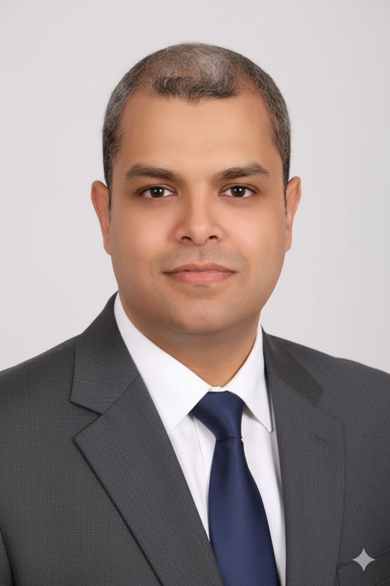

Systems that can't afford to fail
I lead engineering teams that modernize business‑critical software — without stopping the business.
Software Development Lead at Eva Pharma· leading 9 engineers· .NET · Angular · Azure· Alexandria, Egypt → remote worldwide

01 · Selected impact
Proof over adjectives.
Three engagements that show how I work: one inside a regulated pharma enterprise, one zero-downtime modernization, one live product.
DevOps adoption at Eva Pharma
Moving a cross-functional engineering organization from manual release gates to automated pipelines — while releases kept shipping.
+20% delivery efficiency Read the case study →Zero-downtime legacy modernization
Inherited systems other teams were afraid to touch — moved toward services, OAuth/JWT and Redis caching without pausing the business.
+25% data-retrieval performance Read the case study →The Clyxa platform — site, admin & campaigns
Running in production today: an agency website, a complete admin panel, and a real-time campaign tracker.
clyxa.org live ↗ Read the case study →02 · How I lead
Leadership is a delivery mechanism.
Own the outcome, not the ticket.
Teams move fastest when everyone argues about the same goal. I make decision rights explicit so engineers spend their energy on the problem, not on permission.
Modernize in production, never big-bang.
Big-bang rewrites fail politically before they fail technically. Migration behind stable contracts keeps the business running while the system changes underneath.
Grow the people who grow the system.
Mentoring nine engineers through structured code review didn't just raise quality — it raised throughput by thirty percent. Systems scale when their people do.
03 · Experience
Scope of ownership.
What each role was trusted with — not just what it was called.
Software Development Lead
- Lead a team of 9 developers across multiple concurrent projects
- Own the technical roadmap and alignment with product, QA and infrastructure stakeholders
- Design advanced databases for business-critical web applications
Senior Software Engineer
- Led the Microsoft Azure DevOps rollout — +20% delivery efficiency
- Built scalable applications on an Agile/Scrum cadence
- Improved application performance by 25%
Senior Software Engineer
- Delivered a warehouse control system with +20% operational efficiency
- Cut post-release defects by 15%
- Owned Git-based version control discipline
Software Engineering Team Lead
- Ran the full development lifecycle across multiple projects
- Reduced client escalations by 20% through process and communication
- Managed and tuned the company web portal
Software Engineer
- Built an enterprise Single Sign-On (SSO) system
- Designed databases and stored procedures under real load
- Worked remotely with a US team — years before it was normal
04 · Contact
The fastest way to reach me is email.
I reply within one business day (GMT+2). Open to engineering-lead roles and selective consulting on legacy modernization — pharma, commerce and marketing domains welcome.